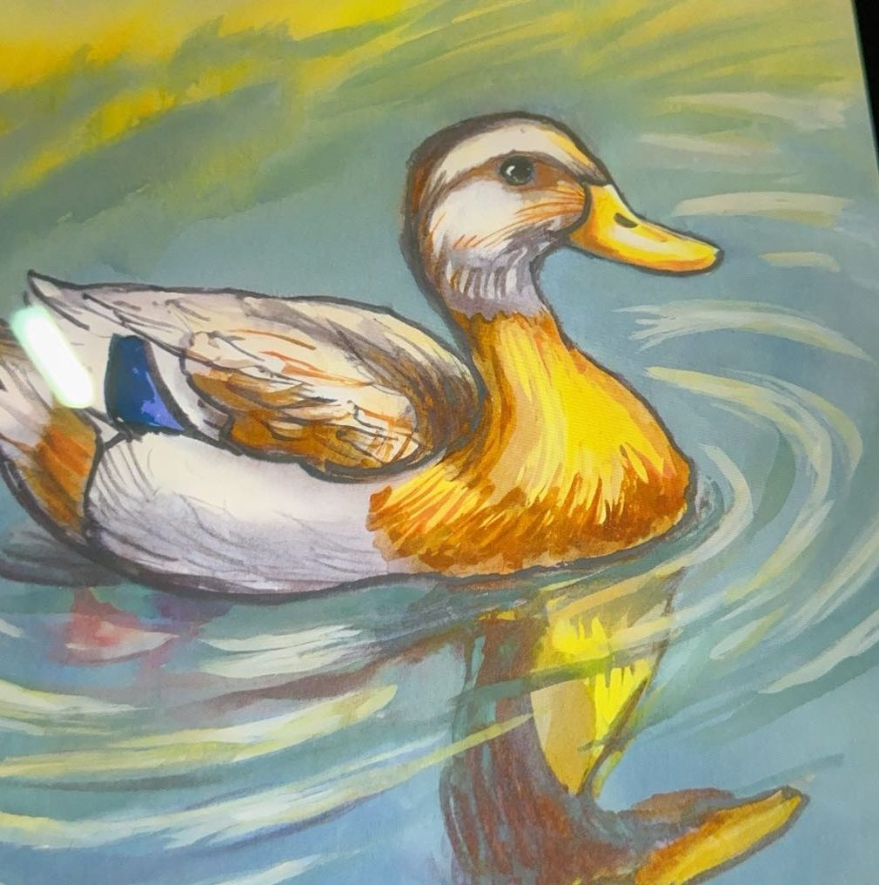

Someday
Why a duck farm
I want to open a duck farm someday. It is a long want, not a place I have opened.

I grew up in a family Chinese restaurant in central Indiana (Greenfield, Indiana). Friday night was the floor, the till, and the kitchen, all at once. A system either survives contact with a real customer or it does not. I still trust that test more than a plan that only works when the room is quiet.
The work I respect is unglamorous, and it has to hold for the people who depend on it. Serve IT is the same instinct with a partner in the room. You do not get to keep the site. Staff do. If they cannot run it after the clinic leaves, the semester did not finish. The product is whether they can keep using it.
A duck farm is that instinct with mud on it. Animals, water, feed, a gate that has to close, a morning that does not care whether the idea was elegant. I want to build something I have to show up for, the way a restaurant has to open, and leave a place other people can keep. Gardening and long walks already pull me outside. The farm is the long version of that, not a hobby I have turned into a company.
There is a small sketch elsewhere on this site, a pond I poke at myself. It is not the farm. I have not opened one.